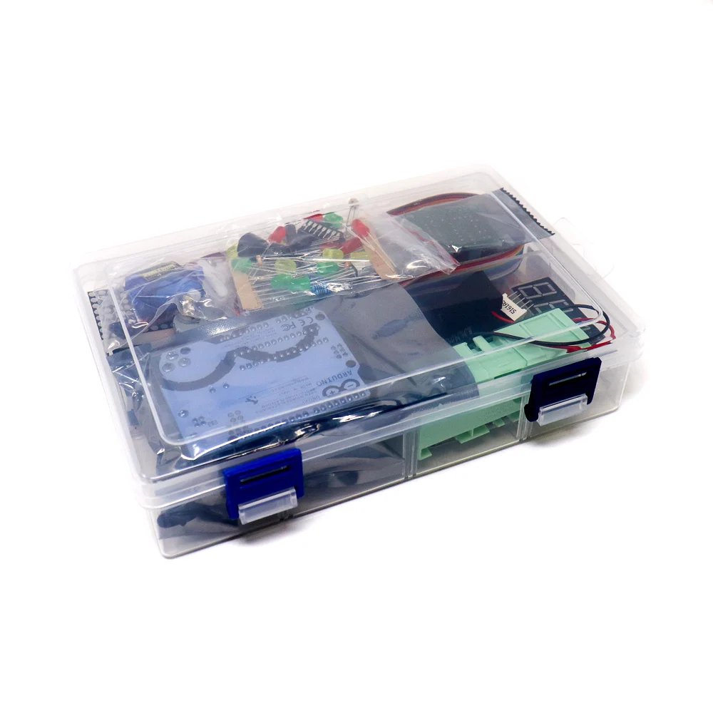
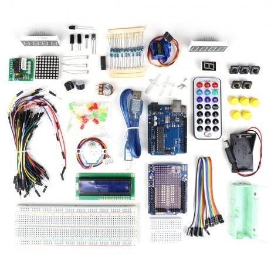
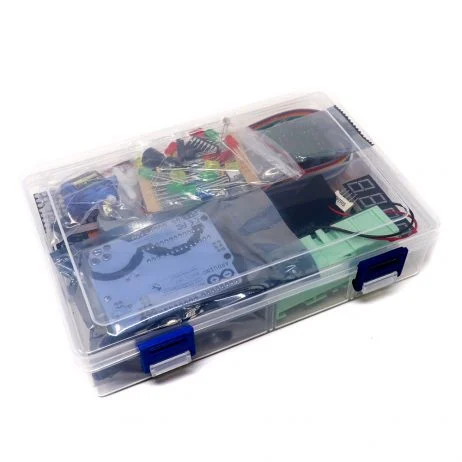
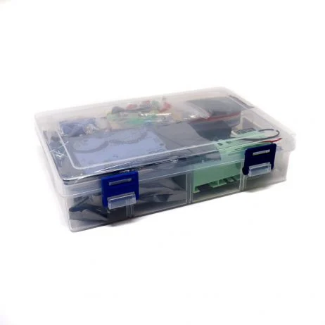
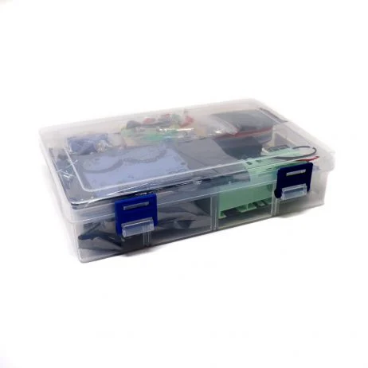
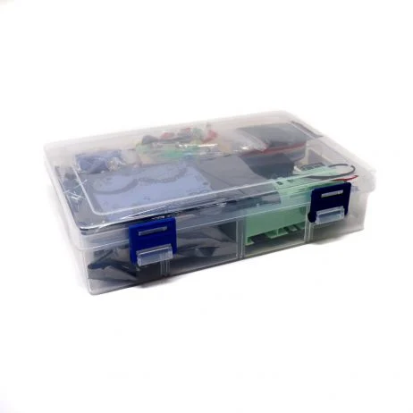
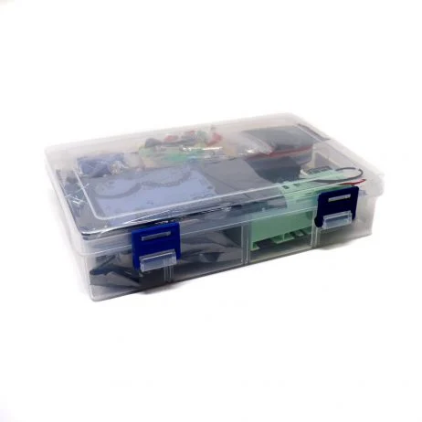

 



This Arduino Uno R3 Beginners Kit is great for absolute beginners. The kit comes with numbered components that would create 15 unique projects from a blinking LED to an RGB light dimmer. A good thing about this UNO kit, that is very under-appreciated when it comes to electronics kits — each piece is clearly labeled. It is never a bad idea to have extra parts like LEDs, jumper wires, resistors around. Beginners can learn the basics of Arduino programming as well as the expert in programming. From this kit, you will get what Arduino is all about and how it is used. Whether you are a beginner or already have experience with Arduino under your belt, This Arduino beginners kit by ROBU.IN will be a fun way to expand your knowledge. Building some creative and simple projects is a great way to walk through coding and basic electronic circuits knowledge. This kit includes everything you need to get started with electronics using an Arduino and a lot of things that will take you from a beginner to an enthusiast. It includes all of the basics: a UNO board, breadboard, cables, LEDs, resistors, and pushbutton switches. Great for robot prototyping: Includes Servo motor, LCD module and etc.
Note: 9V Non-Rechargeable Battery is not included in a package, you need to buy it separately.